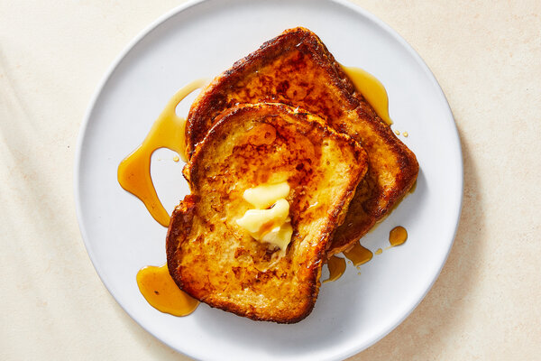

French Toast

Description
French toast, also known as eggy bread, is a breakfast food. It is typically made of day old bread soaked in custard.
Best eaten with maple syrup and fresh fruit, it can also serve as the bread in a Monte Cristo sandwich.
Ingredients
- 4 slices of bread
- 4 large eggs
- ½ cup milk
- ½ teaspoon vanilla
- ¼ teaspoon ground cinnamon
- 2 tablespoons butter or oil for frying
- 2 tablespoons maple syrup
Steps
- Slice bread crosswise so that each slice is about 1-inch thick. Cut larger slices into halves or thirds, if desired. Set aside.
- In a shallow mixing bowl, whisk together the eggs, milk, vanilla and cinnamon.
- Quickly dip slices (do not soak) in egg mixture and cook until golden brown on both sides.
- Keep egg mixture stirred and spices well blended.
- Sprinkle with powdered sugar and serve with warm maple syrup.